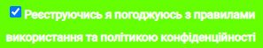
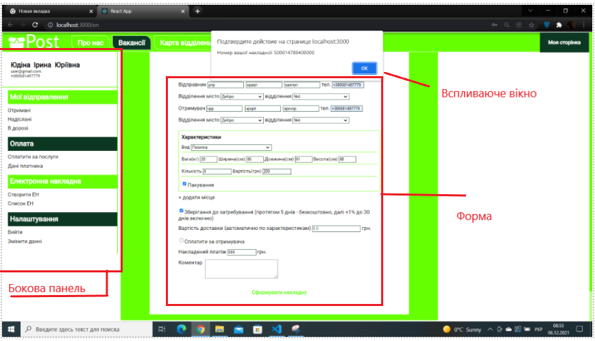

Загальний опис системи
Веб застосунок призначений для користувачів поштових послуг компанії. За допомогою нього вони можуть виконувати деякі операції стосовно відправлень а також дізнаватись інформацію. Певні дії дозволені лише авторизованим користувачам. Відкривається застосунок з головної сторінки, Верхня та нижня панель навігації доступні з будь-якої сторінки системи.
Подивитись інформацію про компанію. Сторінка відкривається натисненням на "Про нас" пункту верхньої панелі навігації
Подивитись інформацію щодо вакансій Сторінка відкривається натисненням на "Вакансії" пункту верхньої панелі навігації
Подивитись карту відділень. Сторінка відкривається натисненням на "Карта відділень" пункту верхньої панелі навігації
Подивитись інформацію для ФОП Сторінка відкривається натисненням на "Для ФОП" пункту верхньої панелі навігації
Подивитись інформацію для приватних осіб Сторінка відкривається натисненням на "Для приватних осіб" пункту верхньої панелі навігації
Подивитись інформацію щодо конфіденційності Сторінка відкривається натисненням на "Конфіденційність" пункту нижньої панелі навігації
Подивитись інформацію щодо компенсацій Сторінка відкривається натисненням на "Компенсація" пункту нижньої панелі навігації
Зареєструватись у системі Сторінка відкривається натисненням на "Реєстрація" пункту верхньої панелі навігації. Користувач повинен заповнити форму реєстрації. Заповнити кожне поле, ввести бажаний пароль. Щоб сховати/побачити пароль, натиснути на значок ока поруч з полем паролю. При заповненні полів вони проходять валідацію. Для реєстрації необхідно погодитись із політикою коніеденційності.  Натиснення кнопки "Зареєструватись" відкриє сторінку користувача, якщо данні коректні, в іншому випадку буде виведено повідомлення про помилку.
Увійти в систему Сторінка відкривається натисненням на "Вхід" пункту верхньої панелі навігації. Користувач повинен заповнити форму авторизації. Заповнити кожне поле, ввести логін та пароль. Щоб сховати/побачити пароль, натиснути на значок ока поруч з полем паролю. При заповненні полів вони проходять валідацію. Для реєстрації необхідно погодитись із політикою коніеденційності. Натиснення кнопки "Увійти" відкриє сторінку користувача, якщо данні коректні, та логін з паролем дійсні і відповідні, в іншому випадку буде виведено повідомлення про помилку.
Створити електронну накладну. Для виконання цієї дії необхідно пройти авторизацію. Сторінка відкривається натисненням на "Створити ЕН" пункту бокової панелі навігації на сторінці користувача. Користувач повинен заповнити форму створення ЕН, заповнити необхідні поля. Додати (за необхідністю) інше місце та заповнити його поля. Можна видаляти та додавати місця окрім першого. Натиснення кнопки "Сформувати накладну" додає новий запис до списту ЕН та показує вспливаюче вікно з номером накладної (за умови що дані коректні, або виводить повідомлення про помилку).

Подивитись список своїх електронних накладних. Для виконання цієї дії необхідно пройти авторизацію. Сторінка відкривається натисненням на "Створити ЕН" пункту бокової панелі навігації на сторінці користувача. На ній представлено список номерів накладних та дат їх створення.
Вирахувати вартість доставки. Сторінка відкривається натисненням на "Калькулятор" пункту нижньої панелі навігації. Користувач повинен заповнити всі необхідна поля та натиснути кнопку "Вирахувати", якщо дані коректні, в полі вартості з'явиться вирахувана сумма.
Авторизація - набування розпізнавання системою шляхом реєстрації або входу, отримання прав на виконання певних дозволених даному користувачеві дій у системі
Авторизований користувач - користувач що пройшов авторизацію
Валідація - перевірка будь-чого на збіжність з правилами що для цього визначені
Верхня панель навігації - візуальні елементи що при натисканні ведуть до певних розділів сайту, розташовані згори сторінки та завжди доступні у будь- якій частині сайту.
Вихід - набування статусу неавторизованого користувача
Вхід - сторінка з формою, яку користувач заповняє для авторизації на сайті за даними існуючого акаунту
Головна сторінка - сторінка сайту, яка завантажується першою при вході на сайт, містить привітальну фразу з логотипом та посилання до інших частин сайту
Калькулятор - сторінка з формою для вираховування вартості доставки посилки
Кнопка - графічний елемент що служить для відправки даних форми або переходу до певної частини сайту

Коректні дані - дані які пройшли валідацію
Користувач - фізична особа яка використовує сайт (переглядає або виконує будь-які дії на ньому)
Логін - номер телефону або адреса електронної скриньки зареєстрованого користувача, повинен бути унікальним, служить для ідентифікації користувача у системі
Неавторизований користувач - користувач що не пройшов авторизацію
Нижня панель навігації - візуальні елементи що при натисканні ведуть до певних розділів сайту, розташовані внизу сторінки та завжди доступні у будь- якій частині сайту
Пароль - послідовність букв цифр і символів що прив’язана до логіну, служить для ідентифікації користувача у системі при авторизації разом з логіном
Поле - засіб приймання інформації від користувача, може бути текстовим або спеціальним, кожне поле має свої обмеження на формат вводимої інформації, поле з не коректними даними в ньому, підсвічується червоним. Підказки щодо допустимого формату даних наведено в повідомленнях під полем.
Політика конфіденційності - інформація щодо того як дані користувача можуть використовуватися
Реєстрація - процес створення на сайті нового акаунту користувача
Список ЕН - список номерів електронних накладних сформованих користувачем на сайті у форматі таблиці з двома стовпчиками: номер накладної та дата її формування
Створення ЕН - сторінка з формою для створення електронної накладної
Сторінка користувача - сторінка, на якій знаходиться інформація щодо авторизованого користувача а також меню з посиланнями на доступні для цього користувача функції
Умови використання сайту - умови та правила яким повинен слідувати користувач сайту
Форма - сукупність полів та кнопок при взаємодії з якими користувач отримує бажаний результат (інформацію, або створення об’єктів у системі)